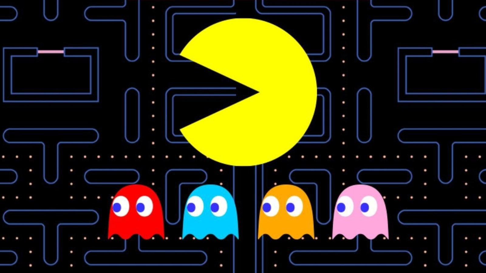

The evolution of video games is a fascinating journey through innovation, technology, and creativity. From
the humble beginnings of arcade classics and pixelated graphics to the immersive, photorealistic experiences
of modern gaming, the industry has continuously pushed the boundaries of what’s possible. This page explores
key milestones in gaming history, highlighting the technological advancements, groundbreaking game designs,
and cultural shifts that have shaped the games we know and love today. Whether you're a lifelong gamer or
just starting to explore the medium, join us as we take a deep dive into the dynamic world of video game evolution
